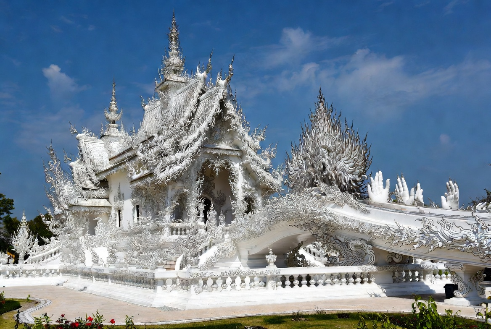
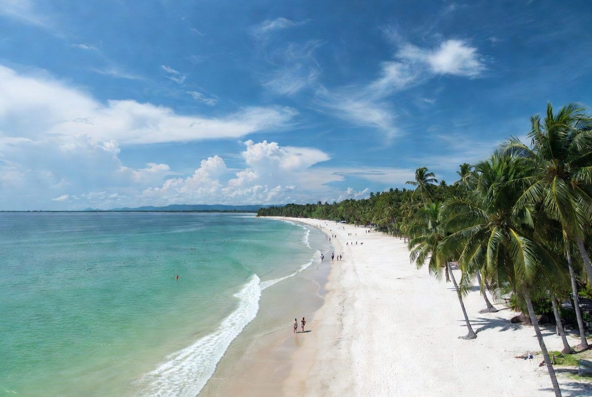
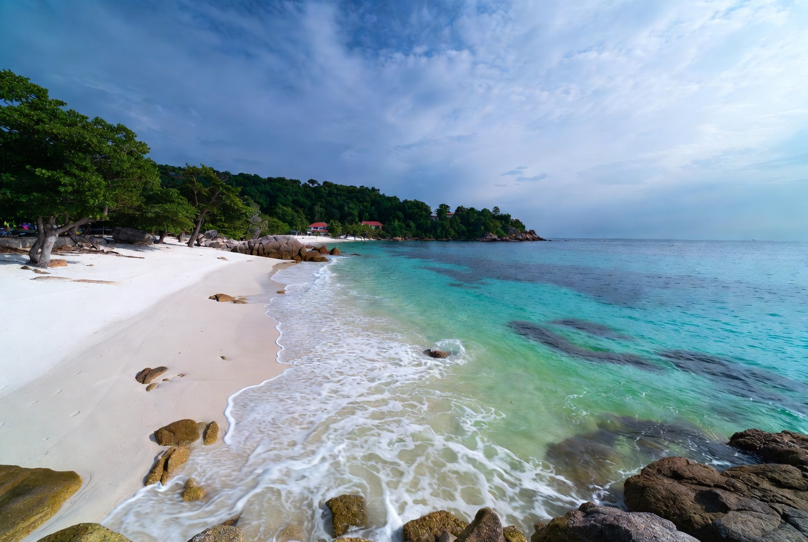
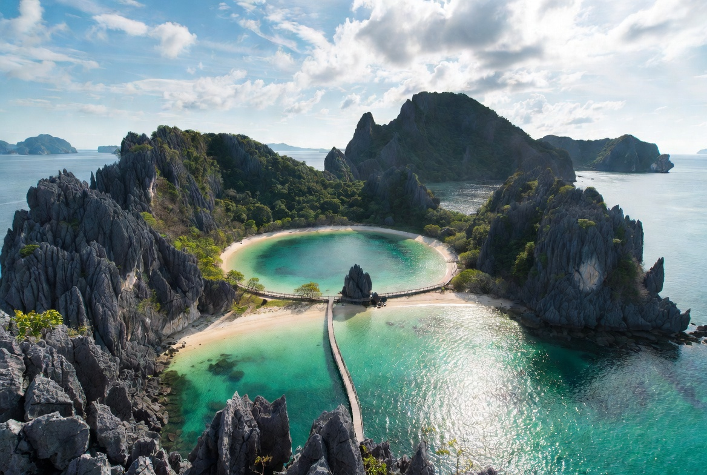
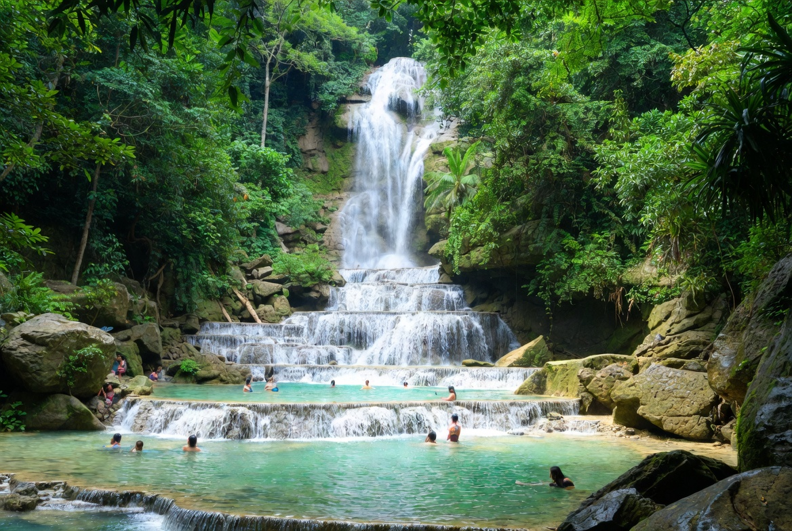
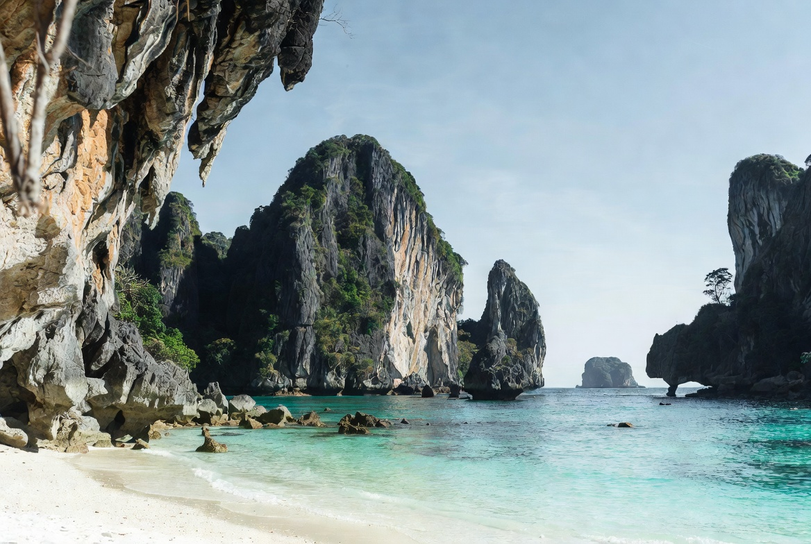
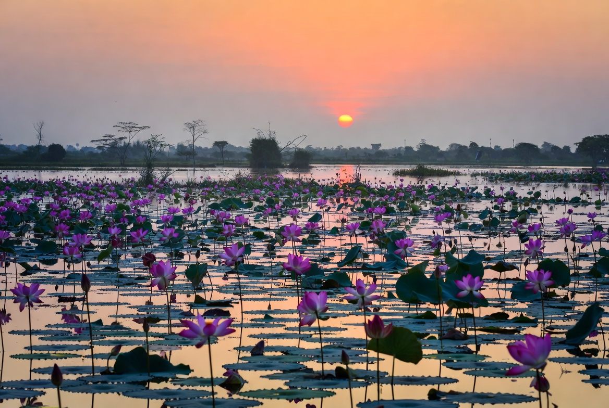

Travel & Visas • Planning Guide
The Best Time to Visit Thailand: A Month-by-Month Guide
By Genext Information Systems Staff
Published 21 July 2026 • 8 min read

Cool-season mist over the Pai valley. There is no bad month in Thailand — only badly matched months and places.
"When is the best time to visit Thailand?" is the wrong question. The right one is "where should I be in the month I can actually travel?" — because Thailand runs two opposite monsoon systems at the same time. When the Andaman coast is being hammered by rain, the Gulf islands are having some of their finest weather. When the north is cool and clear, the south is at its most expensive. There is no month in the calendar where the whole country is a write-off.
Here is the honest version, month by month, based on the seasonal patterns we track across our destination guides rather than a generic "November to February is best" that ignores three quarters of the year.
The one rule that explains everything
The Andaman coast (Phuket, Krabi, Phi Phi, Lanta, Lipe, Phang Nga) is dry roughly November to April and wet May to October. The Gulf coast (Samui, Phangan, Koh Tao) runs almost the opposite: driest February to April, with its worst rain in October and November. The north and Isan are best November to February, punishing in March and April. Learn those three lines and you can plan any trip.
January — Chiang Rai and the far north

January is the north at its absolute peak, and Chiang Rai edges out Chiang Mai because it sits higher and gets cooler. Days run a comfortable 26–30°C, nights drop to 12–15°C, and the air is clear — this is the window before the burning season wrecks the views. Bring a light jacket for the evenings, which surprises almost everyone.
The White Temple and Blue Temple photograph beautifully in the low, clean winter light, and day trips into the hills actually have mountain views worth the drive. Alternative: the Andaman coast is in full peak season — perfect weather, highest prices of the year.
February — Koh Samui and the Gulf

Here is where most guides get lazy. Koh Samui's weather is the opposite of Phuket's, and February begins its finest stretch — February to April is the driest, sunniest, calmest period on Samui, Phangan and Koh Tao. If you want Thai island weather without Andaman peak-season pricing, this is the month.
February is also when the Chiang Mai Flower Festival fills the old city with parade floats, if you would rather be north than wet-footed.
March — Koh Lanta, before the monsoon turns

March is the smartest Andaman month of the year. The dry season runs to April, but the December-to-February crush has gone home — so you get calm seas, full boat-trip schedules and noticeably better rates. Koh Lanta rewards this more than most: the quieter southern bays like Kantiang feel genuinely secluded once peak season breaks.
The mainland is a different story. March is when the north turns hot and hazy, so save Chiang Mai and Pai for another trip.
April — Songkran, and the heat

April is the hottest month of the Thai year and there is no clever way around it — the central plains and Isan hit the high 30s and stay there. What April has instead is Songkran (13–15 April), the Thai New Year water fight, which is genuinely one of the great experiences on earth if you accept that you will be soaked from breakfast onward.
Bangkok is the practical choice: air-conditioned escape routes, the S2O water rave, and the whole city participating. Chiang Mai throws arguably the better Songkran, but April is also peak burning season up there — go in knowing the air may be poor. Beach alternative: the Gulf islands are still in their best stretch.
May — Isan turns green, and fires rockets at the sky

May breaks the heat. The southwest monsoon arrives, the northeast turns from dust to green, and villages across Isan launch homemade rockets to demand rain from the sky — the Boon Bang Fai rocket festival, one of the loudest and least touristed events in the country.
For a beach in May, stay on the Gulf side: Koh Samet and Rayong are usually far less affected than the Andaman coast, and rates drop as the crowds thin.

Koh Samet — close to Bangkok, on the drier Gulf side, and cheapest once high season ends.
June — Loei and the ghost festival

Loei is the coolest province in Isan and the most underrated in the country. In late June, Dan Sai holds Phi Ta Khon — masked ghost dancers, hand-carved headdresses, and a village-scale party that has stayed almost entirely Thai. The 2026 dates fall on 20–22 June.
Pair it with Phu Kradueng or Phu Ruea for pine forests and mountain air that feels nothing like the Thailand on the postcards. Rain is increasing but not yet dominant.
July — Ubon Ratchathani and the candle parade

July is wet, and it does not matter, because the Ubon Ratchathani Candle Festival is worth planning a trip around. Marking the start of Buddhist Lent, temples spend months carving enormous wax sculptures and then parade them through the city. It is the finest craft spectacle in Thailand and it is almost entirely free of foreign tour groups.
While you are in the province, Sam Phan Bok — the rock formations known as Thailand's Grand Canyon — is a genuine landscape surprise.
August — Koh Tao, the counterintuitive pick

Everyone tells you August is monsoon season in Thailand. On the Andaman side, they are right. On Koh Tao, July to September is a genuinely good window — plenty of sunny days, decent underwater visibility, and the island's dive schools running at full tilt. It is the single most useful thing to know about a European summer holiday in Thailand.
Koh Nang Yuan, the triple-beach islet next door, stays the postcard shot it always was. Book dive courses ahead: summer is Koh Tao's busy season precisely because the weather cooperates.
September — Kanchanaburi, when the waterfalls are at full power

September is the wettest month in much of Thailand, so stop fighting it and go somewhere the rain improves. Kanchanaburi's waterfalls — Erawan above all — run at their strongest after months of monsoon, the jungle is loud and green, and the crowds that pack the place in January are gone.
The Bridge over the River Kwai, the Death Railway and the war cemeteries carry more weight in low season anyway, when you can stand at them alone. Expect afternoon storms and plan mornings accordingly.
October — Phuket and the Vegetarian Festival

October is a gamble on Phuket weather — it is the tail of the southwest monsoon and can be genuinely wet. It is also when the Phuket Vegetarian Festival takes over the old town: nine days of Taoist processions, street food, firecrackers and the extreme piercing rituals the festival is famous for. It is confronting, extraordinary and completely unlike anything else in the country.
Rates are at their annual floor, Phuket Old Town's Sino-Portuguese shophouses look better in the rain than in glare, and the Gulf side is available if you want dry sand instead.
November — the best month in Thailand

If you get one pick, take November. The rains have stopped, the north has cooled, the Andaman dry season has opened, and both Loy Krathong and Yi Peng land in the same window — krathong floats on every waterway in the country and, in Chiang Mai, thousands of lanterns rising at once. Sukhothai runs the most historically resonant Loy Krathong of all, among the ruins where the tradition is said to have started.
November also brings the Surin Elephant Round-Up. The catch is obvious: everyone else has worked this out too. Book early.
December — Krabi, Phang Nga and the Andaman at its best

December is the Andaman coast doing exactly what the brochures promise: dry, calm seas, every boat trip running, limestone cliffs and water the colour of glass. Krabi and Phang Nga Bay are the pick — Railay, the Emerald Pool, James Bond Island, sea-kayaking through cave arches. You pay the highest prices of the year and share it with everyone, especially over Christmas and New Year.
For something quieter, Udon Thani's Red Lotus Lake starts blooming in December and runs to February — an entire lake turning pink at sunrise, and still barely known outside Thailand.

Red Lotus Lake, Udon Thani — December to February, best in the first hour after sunrise.
The short version
- Best all-round month: November.
- Best value: March on the Andaman, September anywhere inland.
- Best beach weather in European summer: Koh Tao and the Gulf, July to September.
- Months to avoid the north: March and April — heat plus burning-season haze.
- Months to avoid the Gulf islands: October and November — their heaviest rain, opposite to everywhere else.
Plan it properly • From the ThaiThuk network
Turn a month into an actual route
Knowing that February belongs to the Gulf and September belongs to the waterfalls is the easy part. Stitching it into a route that does not waste three days on buses is harder. ThaiTripPlanner has detailed guides to more than 40 Thai destinations — climate, best-time windows, how to get there and what is actually worth your time in each — and lets you build a day-by-day itinerary around the dates you can travel. If you have a month locked in and no idea how to sequence it, start there.
Build your route at ThaiTripPlanner →The real conclusion is the one we started with. Thailand does not have a good season and a bad season — it has a rotating cast of regions that take turns being excellent. Pick your month first, then let the country tell you where to go.